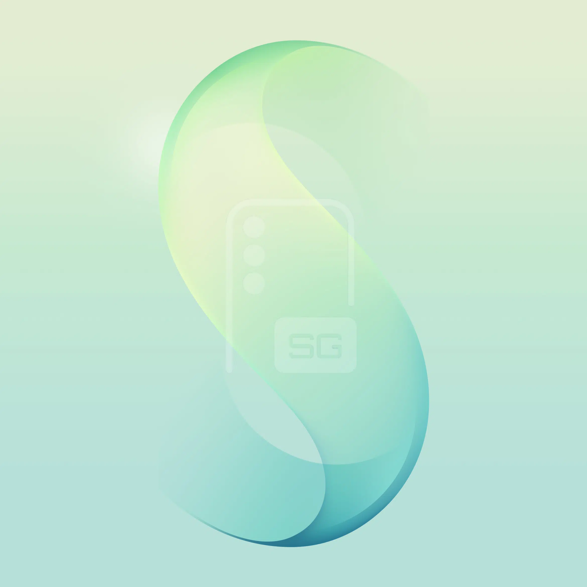
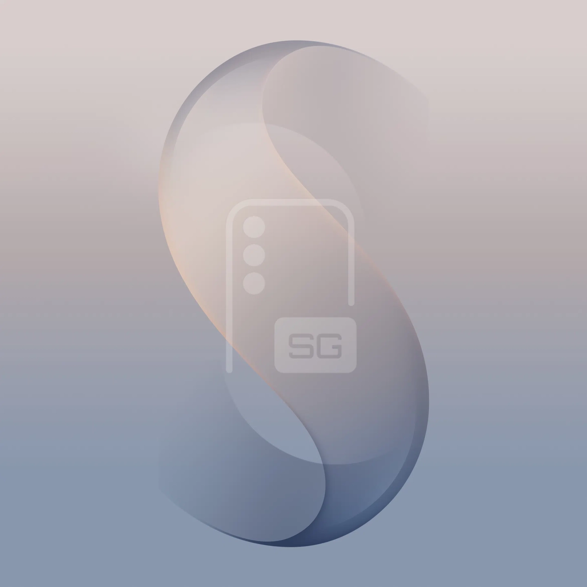
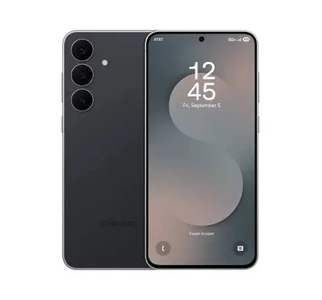

디자인 및 색상
IT 소식에 따르면 기술 매체 sammyguru가 어제(8월 3일) Samsung Galaxy S26 FE용 기본 배경화면을 공유하며, 해당 모델이 최소 3가지 색상으로 출시될 것임을 암시했습니다.
공개된 배경화면에 따르면, Samsung Galaxy S26 FE는 Graphite(석모회), Mint(민트), Violet(바이올렛) 세 가지 색상으로 출시될 것으로 예상됩니다.
모델 정보
이 기기의 내부 코드는 "r14"로, Galaxy S24 FE(r12) 및 Galaxy S25 FE(r13)의 명명 규칙를 계승했습니다.
카메라
Galaxy S26 FE는 다음과 같은 카메라 사양을 탑재할 것으로 보입니다.
- 메인 카메라: 50MP Samsung ISOCELL S5KGN3 센서, 1/1.57인치, 1µm 단일 픽셀, f/1.8 조리개, 24mm 등가 초점 거리, Dual Pixel PDAF 및 OIS 손떨림 보정 지원
- 망원 카메라: 8MP OV08A1 센서, 3배 광학 줌, f/2.4 조리개, PDAF 및 OIS 지원
또한, 이 기기에는 12MP GalaxyCore GC12A2 센서와 12MP Sony IMX825 센서가 추가로 탑재됩니다. 현재 어떤 센서가 초광각에 사용되고 어떤 것이 전면 셀피용으로 사용되는지는 확정되지 않았으나, 이전 모델의 사례를 볼 때 Sony IMX825는 전면 카메라에, GC12A2는 초광각 카메라에 채택될 가능성이 높습니다.
비디오 및 기타 사양
비디오 녹화 기능은 다음과 같습니다.
- 모든 카메라: 4K 60fps 녹화 지원
- 메인 카메라: 8K 30fps 녹화 지원
기타 알려진 사양은 다음과 같습니다.
- 프로세서: Exynos 2500 (3nm 공정)
- 배터리: 4900mAh
- 충전: 45W 유선 고속충전
- 디스플레이: 6.7인치 Dynamic AMOLED 2X, 120Hz 주사율 지원
총평
Samsung Galaxy S26 FE는 세 가지 색상 옵션과 Exynos 2500 칩셋을 탑재할 것으로 예상됩니다. 특히 메인 카메라에 50MP 센서를 채택하고 다양한 비디오 녹화 모드를 지원하는 것이 특징입니다.
外观与代号
根据 sammyguru 分享的默认壁纸，Samsung Galaxy S26 FE 被预测将提供三种配色：Graphite（石墨灰）、Mint（薄荷绿）和 Violet（紫罗兰）。该机型的内部代号为“r14”，延续了前代产品的命名逻辑。
影像系统规格
Galaxy S26 FE 搭载了一套高性能的相机传感器组合，支持多种录制模式：
- 主摄：50MP Samsung ISOCELL S5KGN3（1/1.57 英寸，f/1.8 光圈，支持双像素 PDAF 和 OIS）
- 长焦镜头：8MP 豪威 OV08A1（支持 3 倍光学变焦，f/2.4 光圈，支持 PDAF 和 OIS）
- 辅助传感器：包含一颗 12MP GalaxyCore GC12A2 和一颗 12MP Sony IMX825（预计分别用于超广角和前置自拍）
- 录像功能：所有摄像头支持 4K 60fps，主摄额外支持 8K 30fps。
核心硬件与显示
该机型的其他已知技术参数如下：
- 处理器：Exynos 2500（3nm 工艺）
- 电池与充电：4900mAh 电池，支持 45W 有线快速充电
- 屏幕：6.7 英寸 Dynamic AMOLED 2X，支持 120Hz 刷新率
总结
Samsung Galaxy S26 FE 的相关信息已初步流出，包括 Graphite、Mint 和 Violet 三种配色以及“r14”代号。该机预计搭载 Exynos 2500 芯片和 4900mAh 大电池，并配备由 Samsung 和 Sony 提供的高性能影像传感器。
デザインとカラー
ITニュースによると、技術メディアのsammyguruが昨日（8月3日）にSamsung Galaxy S26 FEのデフォルト壁紙を公開し、同モデルが少なくとも3種類のカラーバリエーションで発売されることを示唆しました。
公開された壁紙に基づくと、Samsung Galaxy S26 FEはGraphite、Mint、Violetの3色で展開される見込みです。
モデル情報
このデバイスの内部コードは「r14」であり、Galaxy S24 FE（r12）およびGalaxy S25 FE（r13）の命名規則を踏襲しています。
カメラ
Galaxy S26 FEは以下のカメラ仕様を搭載する見込みです。
- メインカメラ：50MP Samsung ISOCELL S5KGN3センサー、1/1.57インチ、1µm単一ピクセル、f/1.8絞り、24mm相当の焦点距離、Dual Pixel PDAFおよびOIS手ブレ補正をサポート
- 望遠カメラ：8MP OV08A1センサー、3倍光学ズーム、f/2.4絞り、PDAFおよびOISサポート
また、このデバイスには12MP GalaxyCore GC12A2センサーと12MP Sony IMX825センサーが追加で搭載されます。現在、どのセンサーが超広角に使用され、どれがフロントセルフ用に使用されるかは確定していませんが、過去のモデルの例からすると、Sony IMX825はフロントカメラに、GC12A2は超広角カメラに採用される可能性が高いです。
ビデオおよびその他の仕様
ビデオ録画機能は以下の通りです。
- すべてのカメラ：4K 60fps録画をサポート
- メインカメラ：8K 30fps録画をサポート
その他、判明している仕様は以下の通りです。
- プロセッサ：Exynos 2500（3nmプロセス）
- バッテリー：4900mAh
- 充電：45W 有線高速充電
- ディスプレイ：6.7インチ Dynamic AMOLED 2X、120Hzリフレッシュレート対応
まとめ
Samsung Galaxy S26 FEは、3色のカラーバリエーションとExynos 2500チップセットを搭載する見込みです。特にメインカメラへの50MPセンサーの採用と、多彩なビデオ録画モードのサポートが大きな特徴となります。
Design and Colors
According to reports from the tech outlet sammyguru, default wallpapers for the Samsung Galaxy S26 FE were shared on August 3rd, suggesting that the model will be released in at least three colors.
Based on the revealed wallpapers, the Samsung Galaxy S26 FE is expected to launch in Graphite, Mint, and Violet.
Model Information
The internal code for this device is "r14," following the naming conventions of the Galaxy S24 FE (r12) and Galaxy S25 FE (r13).
Camera
The Galaxy S26 FE is expected to feature the following camera specifications:
- Main Camera: 50MP Samsung ISOCELL S5KGN3 sensor, 1/1.57-inch, 1µm single pixel, f/1.8 aperture, 24mm equivalent focal length, supporting Dual Pixel PDAF and OIS
- Telephoto Camera: 8MP OV08A1 sensor, 3x optical zoom, f/2.4 aperture, with PDAF and OIS support
Additionally, the device will be equipped with a 12MP GalaxyCore GC12A2 sensor and a 12MP Sony IMX825 sensor. While it has not been confirmed which sensor will be used for the ultra-wide lens and which for the front selfie camera, based on previous models, the Sony IMX825 is likely to be used for the front camera, while the GC12A2 is expected to be used for the ultra-wide camera.
Video and Other Specifications
The video recording capabilities are as follows:
- All cameras: Support 4K 60fps recording
- Main camera: Supports 8K 30fps recording
Other known specifications include:
- Processor: Exynos 2500 (3nm process)
- Battery: 4900mAh
- Charging: 45W wired fast charging
- Display: 6.7-inch Dynamic AMOLED 2X, supporting a 120Hz refresh rate
Summary
The Samsung Galaxy S26 FE is expected to feature three color options and be powered by the Exynos 2500 chipset. It will feature a 50MP main camera system and support various high-resolution video recording modes.


